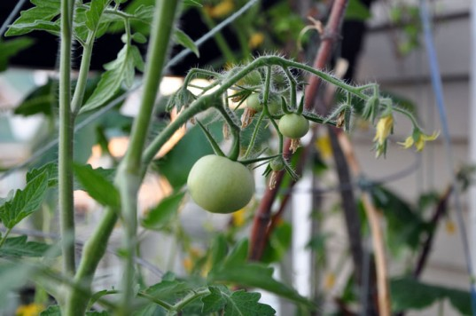

Tomatoes
|  | Tools:Spade, Min 4 inch Container, 1m long Stakes Space:Vertical, Preferably outdoor Season:After Winter, Ideally from September onwards |
|
Plant specifications:Sunlight:atleast 8 hours per day Water:350mm+ per day |
What would spring be without a refresher on tomato growing success? Even veteran gardeners can experience challenges in growing these beauties to perfection. To be sure, I’ve had my share of challenges along the way. But over the years, I’ve honed my skills to master even the greatest challenges Mother Nature can throw my way. So here are a few of the non-negotiable steps you should employ now and every season to improve your tomato growing talent and get your plants off to the best start possible.
Location is key. Pick a sunny spot that gets at least six hours per day. More is better so find the sunniest spot that works. Your plants will be fuller, fruit will form faster and taste best the more sun they get. Next, don’t plant too closely together. Keep your plants separated by at least 2 feet in all directions. It’s amazing how large they will get, and they need room to grow while receiving adequate light and air circulation. Your plants will be much healthier for it.Start with great soil. Starting with great soil and a healthy plant puts you well on your way to an abundant harvest. You can eliminate most of your tomato growing challenges with these two simple mandates. Well-amended soil, full of rich compost and other organic material, can be your secret weapon to having the best tomatoes around.